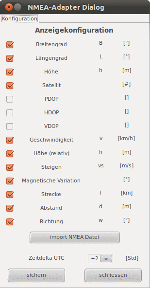

Der gezeigte Gerätedialog dient zur Konfiguration der Anzeige der ausgelesenen Daten. Über einen Dateiauswahldialog, erreichbar über "import NMEA Datei", können auch neue Dateien eingelesen werden.

Über die Konfiguration eines Zeitdeltas kann die positionsbezogene Zeitzonenabweichung angepasst werden.
Hinweis: Kurven, die lediglich Nullen als Daten enthalten werden ausgeblendet. Durch doppelte Selektion einer eigentlich selektierten Kurve kann man die Kurve trotzdem sichtbar schalten!
Tipp: Da der NMEA-Adapter GPS Daten anzeigt und verarbeitet, können diese auch als Google Earth Dateien (KMZ) exportiert, bzw. direkt angezeigt werden. Nähere Beschreibung dazu siehe Toolbar -> Google Earth.